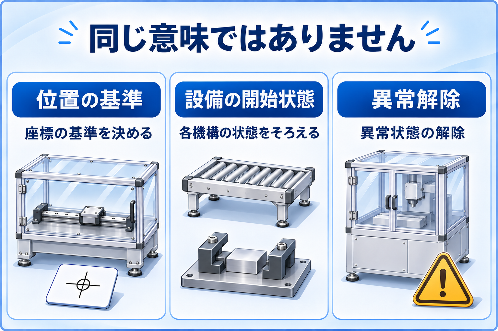
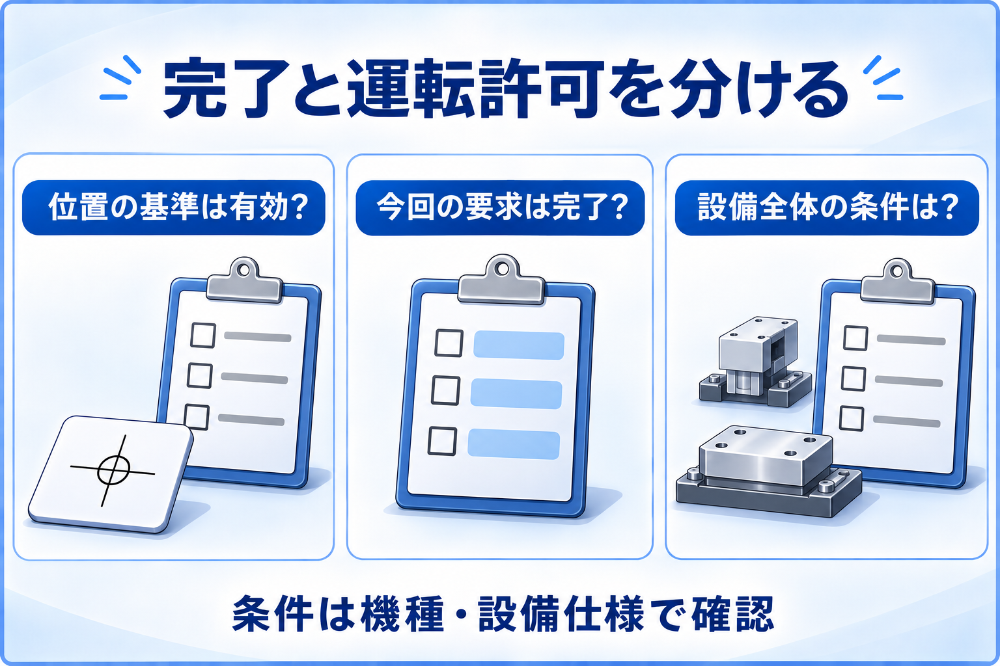

原点復帰回路の全体像
座標の原点と、工程の開始状態を分ける
位置決めでは、制御装置が扱う座標と機械の基準位置との関係を定める必要があります。これに対し、設備の復旧操作では、搬送部やクランプなどを決められた開始状態へ戻す処理を扱います。後者が操作画面で「原点復帰」と呼ばれていても、すべての軸で座標を設定し直しているとは限りません。
たとえば、搬送軸の原点が確立していても、ワークの残留やクランプ状態によって自動運転を始められないことがあります。「何を原点と呼んでいるか」を仕様書・画面の説明・回路で合わせてから読み進めましょう。


先輩まず、軸の位置の基準を決める話なのか、設備の開始状態へ戻す話なのかを分けよう。

後輩原点復帰完了のランプだけで、設備全体の準備完了とは判断しないんですね。
原点復帰の基本動作
一つのセンサーが入れば終わる方式だけではありません。必要な信号・検出順序・動作は、メーカーや原点復帰方式によって異なります。以下は方式を設定する手順ではなく、既存の仕様を読むための整理です。
| 確認する項目 | 読み取る内容 |
|---|---|
| 開始要求 | 誰が、どのモードで、どの軸または工程の復帰を要求するか |
| 開始・継続条件 | 動作を許可する条件と、途中で失われた場合の扱い |
| 動作方式 | 採用された原点復帰方式、移動方向、速度、必要な信号 |
| 完了条件 | 制御装置の完了状態と、設備側で必要な位置・停止・他機構の条件 |
| 中止・異常条件 | 停止要求、機器異常、時間超過などをどう区別するか |
センサーの役割は名前だけで決めない
原点近傍信号は原点の近くに来たことを知らせる信号、原点信号はその方式で基準を定めるために使う信号です。限界信号は移動端の扱いに関係しますが、原点復帰中の利用方法や停止動作は機種・設定に依存します。センサーの点灯、PLC入力、ドライバ側の認識が同じ意味とは限らないため、割付と論理も資料で確認します。
一般の位置検出センサーを、安全を保証する装置として扱わないでください。非常停止や安全扉などの安全機能は、通常の原点復帰ロジックとは別に設備の安全設計に従います。
手動操作・原点復帰・リセットの違い
| 操作 | 主な目的 | 混同しないこと |
|---|---|---|
| ジョグ・手動操作 | 調整などのため、指定した条件で軸や機構を動かす | 移動しただけで座標原点が確立するとは限らない |
| 原点復帰 | 採用された方式で位置の基準を決める、または定めた復帰処理を行う | センサーONだけで完了するとは限らない |
| 異常リセット | 異常状態の解除を要求する | 位置の基準確立や、原因の除去そのものではない |
| 自動運転開始 | 条件が整った設備で工程を開始する | 原点復帰完了だけを唯一の許可条件にしない |
オムロンNJ301の仕様でも、原点を決める「原点復帰」と、既にある絶対座標の0へ位置決めする「高速原点復帰」は別機能です。名称や命令の違いを、使っている装置の資料で確かめましょう。
ラダーを読む前に、状態を分ける
以下は説明用の状態整理であり、そのままPLCに書き込むプログラムではありません。軸の動作は対象コントローラの命令と機械仕様に従います。
- 待機：開始要求があっても、許可条件を満たさなければ開始しません。
- 実行中：機器の実行状態と必要な条件を監視します。開始ボタンが離れた後の継続条件も仕様で定めます。
- 完了：方式に応じた完了を確認し、設備側の完了状態を扱います。
- 中止・異常：完了とは区別します。異常解除と再始動は別の操作です。再始動には設備仕様で定めた条件の確認が必要です。

完了フラグをどう扱うか
完了フラグは、どの条件で成立し、いつ無効になるかまでセットで読みます。電源断、軸の異常、座標変更、再実行などの扱いは機種と設備仕様次第です。一律に保持またはリセットするのではなく、「位置の基準が有効か」と「今回の要求が完了したか」を分けて確認します。
原点センサーが最初からONのときも、即完了としてよいとは限りません。採用方式の開始条件や検出順序を確認する必要があります。
原点復帰できないときの確認ポイント
設備を安全に停止し、作業権限と社内手順を確認したうえで、まず記録とモニタ情報から切り分けます。通電部や可動部へ近づく点検は、必要な隔離・残留エネルギー対策を含む設備所定の手順で行います。
| 症状 | まず記録・確認するもの |
|---|---|
| 開始しない | 操作モード、開始要求の受理、許可条件、機器の異常情報 |
| 途中で止まる | 停止した状態・時刻、停止要求、限界や異常の履歴、仕様上の停止条件 |
| センサーが入っても完了しない | センサーの役割、入力の割付、機器の実行状態、方式が要求する残りの条件 |
| 完了したのに自動運転できない | 他軸・他機構の状態、ワーク確認、設備全体の開始条件 |
入力や出力の強制ON、インターロックの短絡、繰り返し再始動で原因を探す方法は勧めません。原因が分からない動作や想定外の方向への動きがあれば、試行を続けず設備担当者へ確認します。
よくある疑問
電源を入れるたびに原点復帰が必要？
一律ではありません。絶対位置を保持する構成もあります。例えばオムロンNJ301では、対応する絶対値エンコーダ付きサーボとの構成により電源投入時の原点復帰を不要にする機能があります。ただし初期設定や原点情報が無効になった場合を含め、必要な処理は対象機器の資料で確認します。
全軸を同時に戻してよい？
設備の干渉・ワーク・保持状態で決まるため、一般化できません。軸単体の原点復帰命令を知っていても、設備全体の復帰順序までは決まりません。
まとめ
原点復帰回路を読むときは、何の基準を整える処理かを確認し、開始・実行・完了・中止を分けて追うと整理しやすくなります。センサーONだけを完了と決めつけず、機器の原点復帰方式と設備全体の開始条件を照合してください。
メーカー公式資料・技術参照元
公式資料確認日：2026年11月18日。設定・実装では対象型式とバージョンの最新資料を優先してください。
- オムロン NJ301 CPUユニット 定格・性能：原点復帰、高速原点復帰、軸エラーリセット、絶対値エンコーダ対応の機能区分。
- 三菱電機 eラーニング 原点復帰方法：機構により選ぶ方式が異なること。特定方式の設定値・施工手順は本記事では扱いません。